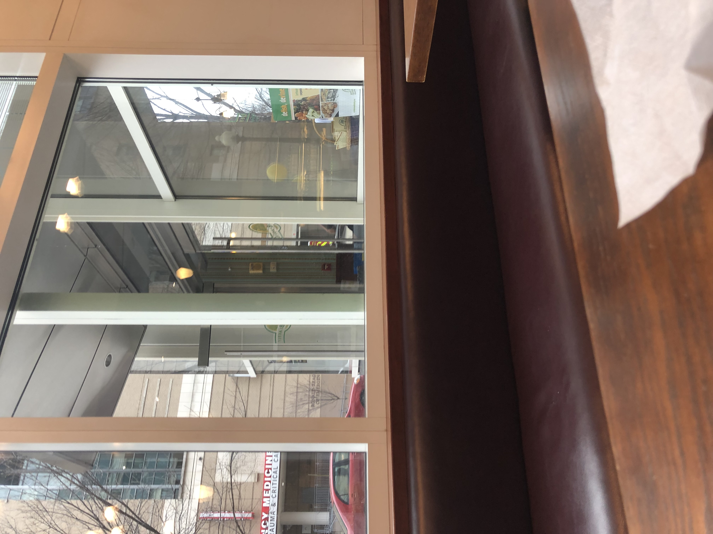
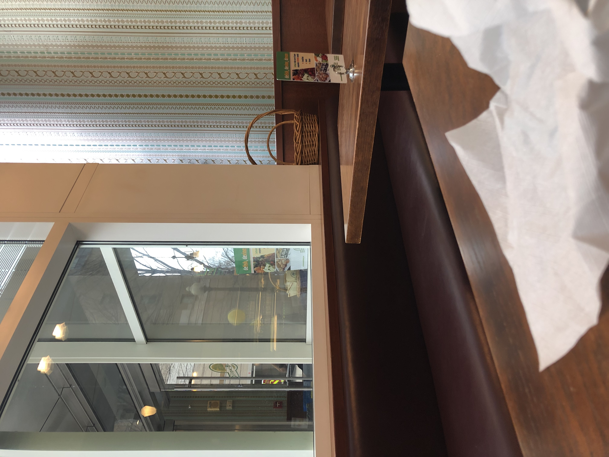
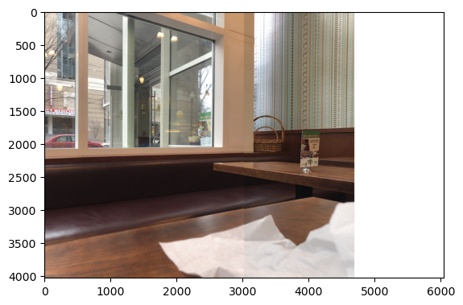

Image mosaicing
An image is like a projection of 3D rays onto a 2D plane. Two images taken from the same point but with the camera pointing in different directions may capture some of the same rays. With cool linear algebra, we can find a way to map the coordinates between such images. Then images can be combined to show a wider field of view than any one of them showed alone. In this project I capture multiple images from one viewpoint and such an image mosaic.
Homography
I need to think more still about how I want to explain this cool math.
Initial two-image mosaicing
Now that I can find the homography to map pixels in one image to pixels in the other, I can begin creating image mosaics. I start with a couple of images I took sitting at a table eating lunch a few days ago.
 
I can extend the left-hand image by adding new columns at the right-hand side that get pixel values from the right-hand images by mapping the coordinates over. I used an interface on my laptop to click on the images to get their coorespondences. to find the homography. I began by finding just four correspondences, which worked, but I wanted to test that my minimization code worked too, and so I added a fifth point. The alignment got slightly better with the fifth point, but not much. Here is that result.
This is a satisfying result after writing out the code to solve the linear system. That said, it is misaligned. Look at the table. The napkin. The math is clearly doing what it's supposed to, so I blame my clicking precision. I'm not much of a clicker, apparently. While I'll admit that I did spend a bunch of time trying to get really precise clicks, I know that lazy, low-pressure clicking followed by automatic correction/optimization will be much nicer in the long run.
Automatically improved correspondences
I use a basic solution to this problem. For each corresponding point, I search within a small radius (~10 pixels) and find the point which minimizes the sum of the differences squared of the pixels within that same radius. This way my clicks can be off by a bit, but the homography will still be based on the intended correspondences that I had in mind. A bit of a balancing act is performed here. These patches of pixels within the radius shouldn't really be the same in the two images (if they were, no homography is needed: the images are already aligned perfectly). This means that the optimization might not always work, but, by keeping the radius small, it is more likely that the patches will line up even for significantly warped images. This method imediately improved the results.
Now the results are getting seriously satisfying. That is a well-aligned table. And, in future images, I won't have to worry as much about my click precision. That said, the transition is still a bit harsh. It is especially noticable up at the top on the wall where the lighting is different in the two images. I'm guessing my phone 'corrected' for lighting automatically, leading to this difference.
Smoother transitions
An easy way to ease this transition without actually thinking about lighting at all is to have a gradient from one image to the next where each pixel in the mosaic that has data from both images (i.e. the images overlap there) can be a weighted average where the weights are high for an image when the point is nearer that image. I'll assign the weights for each row of pixels by finding the width of the overlap and having the weights be linear from 0 to 1 throughout that overlap. Here is the two-image mosaic with that transition.

I am terribly pleased with this result. I can't really find artifacts of the mosaicing process. Maybe I'm missing them? Don't be fooled! There is a line on the table form the sunlight to shadow of the window, but that line is not from the mosaicing. The right most overlapping column in the mosaic is actually dozens of pixels to the left of that line (check the previous images if you don't believe me).